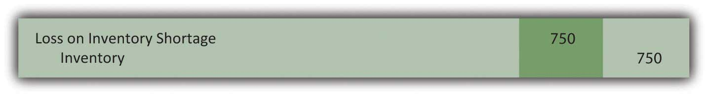
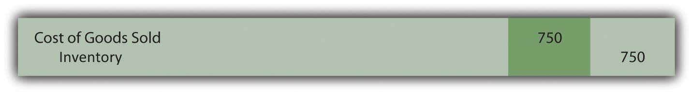
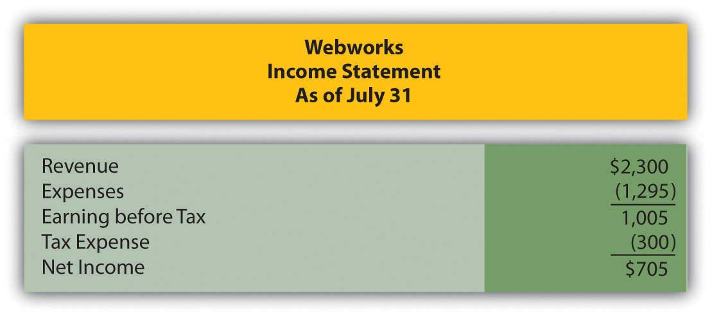
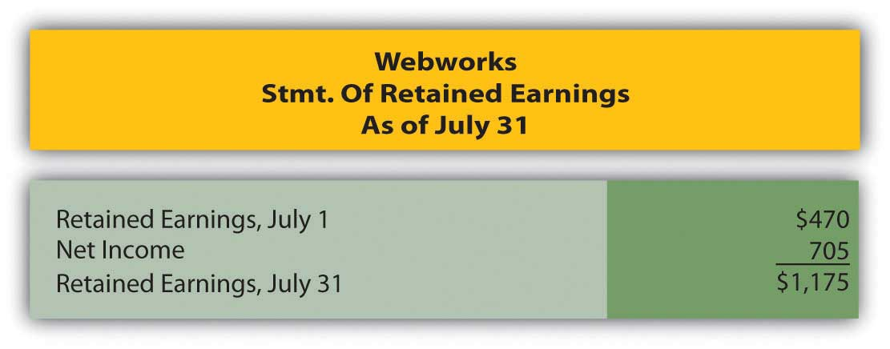

On February 13, North Carolina Furniture purchases three sofas from a manufacturer for $300 each. The terms of the sale are 2/10 n/45. North Carolina Furniture pays the invoice on February 21. How much did they pay?
Crayson Inc. started the year with $490,000 in beginning inventory. During the year, Crayson purchased an additional $1,060,000 in inventory. At the end of the year, Crayson employees performed a physical count and determined that ending inventory amounted to $450,000. What was Crayson’s cost of goods sold for the year?
Raceway Corporation manufactures miniature cars and racetracks for collectors and enthusiasts. Raceway placed an order for supplies from Delta Inc. on December 1. The sales staff at Delta informed Raceway that the supplies would not be available to ship out until December 22 and Raceway accepted this arrangement. The supplies actually shipped, FOB shipping point, on December 26 and arrived at Raceway’s receiving dock on January 2. On which date should Raceway include the supplies in its inventory?
Which of the following concerning the “lower-of-cost-or-market” rule is not true?
Romulus Company sells maps. At the end of the year, Romulus’s inventory account indicated that it had 2,900 maps of Italy on hand that had originally cost $30 each. An inventory count showed that only 2,875 were actually in ending inventory. What journal entry should Romulus make if management believes the discrepancy is due to errors in the accounting process?
Figure 8.12

Figure 8.13

Figure 8.14
Figure 8.15
Real South Products has $400,000 worth of inventory on hand on January 1. Between January and March 13, Real South purchased an additional $190,000 in inventory and sales of $530,000 had been made. On March 13, Real South’s warehouse flooded and all but $15,000 worth of inventory was ruined. Real South has an average gross profit percentage of 25 percent. What would be the approximate value of the inventory destroyed in the flood?
ConnecTech bought 400 computers in December 20X2 for $300 each. It paid $260 to have them delivered to its store. In January 20X3, ConnecTech sold 220 of the computers for $550 each. ConnecTech uses a perpetual inventory system.
Montez Muffins and More is a bakery located in New York. Montez purchases a great deal of flour in bulk from a wholesaler. The wholesaler offers purchase discounts for fast payment. Montez purchased 600 pounds of flour for $100 on May 1, under terms 2/10 n/30. Determine the amount Montez should pay under the following scenarios:
Racers ATVs sells many makes and models of all terrain vehicles. Racers uses a periodic inventory system. On January 1, Racers had a beginning inventory of AXVs costing $28,600. On January 14, Racers received a shipment of Model AXVs with a purchase price of $14,700 and transportation costs of $400. On May 19, Racers received a second shipment of AXVs with a purchase price of $16,900 and transportation costs of $450. On November 1, Racers received its before-Christmas shipment of AXVs with a purchase price of $27,800 and transportation costs of $750.
Magic Carpets Inc. sells a full line of area rugs, from top quality to bargain basement. Economic conditions have hit the textile industry, and Magic Carpets accountant is concerned that its rug inventory may not worth the amount Magic paid for it. Information about three lines of rugs is found below:
Figure 8.16

Costello Corporation uses a perpetual inventory system. At the end of the year, the inventory balance reported by its system is $45,270. Costello performs an inventory count and determines that the actual ending inventory is $39,780.
Fabulous Fay’s is a boutique clothing store in San Diego. Fay’s uses a perpetual inventory system. In March, Fay’s purchased a type of swimwear designed to be slimming to the wearer. It purchased twenty suits of varying sizes for $40 each and priced them at $120 each. They sold out almost immediately, so Fay purchased forty more suits in April for $40 each and sold thirty-eight of them for $130 each. Again in July, Fay made one more purchase of twenty suits at $40 each and sold fifteen of them for $130 each. Fay decided not to put the rest of her inventory on sale at the end of the summer, but to hold onto it until cruise season started the following winter. She believed she could sell the rest then without having to mark them down.
Nakatobi Company has a warehouse in Fargo, ND. The company utilizes a periodic inventory system. At the beginning of the year, the warehouse contained $369,000 worth of inventory. During the first quarter, Nakatobi purchased another $218,000 worth of inventory and made sales of $450,000. On April 1, a flood hit Fargo and destroyed half of the inventory housed in the warehouse. Nakatobi needs to estimate the value of the inventory for insurance purposes. The only additional information Nakatobi has is that typically its cost of goods sold is 55 percent of sales.
This problem will carry through several chapters, building in difficulty. It allows students to continuously practice skills and knowledge learned in previous chapters.
In Chapter 7 "In a Set of Financial Statements, What Information Is Conveyed about Receivables?", you prepared Webworks statements for July. They are included here as a starting point for August.
Here are Webworks financial statements as of July 31.
Figure 8.17
Figure 8.18
Figure 8.19

The following events occur during August:
a. Webworks decides to begin selling a limited selection of inventory items related to its business. During August, Webworks purchases specialty keyboards for $4,900 on account and flash drives for $3,200 on account with the hopes of selling them to its Web site customers or others who might be interested. Due to the limited amount of inventory, Webworks will use a periodic system. Record these purchases.
b. Webworks purchases supplies worth $100 on account.
c. Webworks starts and completes six more Web sites and bills clients for $2,700.
d. Recall that in July, Webworks received $500 in advance to design two Web sites. Webworks completes these sites during August.
e. Webworks collects $2,400 in accounts receivable.
f. Webworks pays Nancy $600 for her work during the first three weeks of August.
g. In June, Webworks designed a site for Pauline Smith and billed her. Unfortunately, before she could finish paying the bill, Ms. Smith’s business folded. It is unlikely Webworks will collect anything. Record the entry to write off the $100 remaining receivable from Ms. Smith.
h. Webworks sells keyboards for $4,500 and flash drives for $3,000 cash.
i. Webworks pays off its salaries payable from July.
j. Webworks pays off $6,000 of its accounts payable.
k. Webworks receives $100 in advance to work on a Web site for a local dentist. Work will not begin on the Web site until September.
l. Webworks pays Leon salary of $2,000.
m. Webworks pays taxes of $475 in cash.
Required:
A. Prepare journal entries for the above events.
B. Post the journal entries to T-accounts.
C. Prepare an unadjusted trial balance for Webworks for August.
D. Prepare adjusting entries for the following and post them to your T-accounts.
n. Webworks owes Nancy $250 for her work during the last week of August.
o. Leon’s parents let him know that Webworks owes $250 toward the electricity bill. Webworks will pay them in September.
p. Webworks determines that it has $60 worth of supplies remaining at the end of August.
q. Prepaid rent should be adjusted for August’s portion.
r. Webworks is continuing to accrue bad debts at 10 percent of accounts receivable.
s. Webworks performs a count of ending inventory and determines that $1,900 in keyboards and $1,100 in flash drives remain. Record cost of goods sold.
E. Prepare an adjusted trial balance.
F. Prepare financial statements for August.